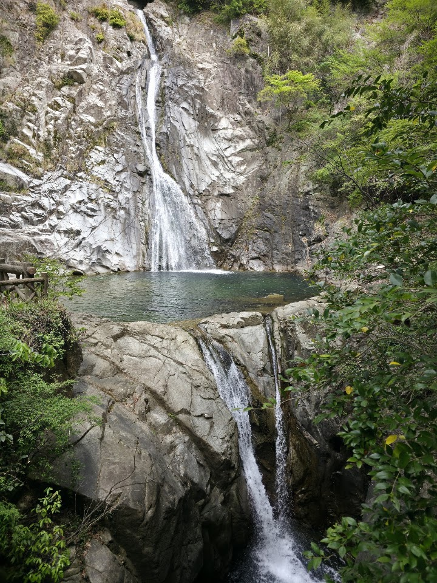
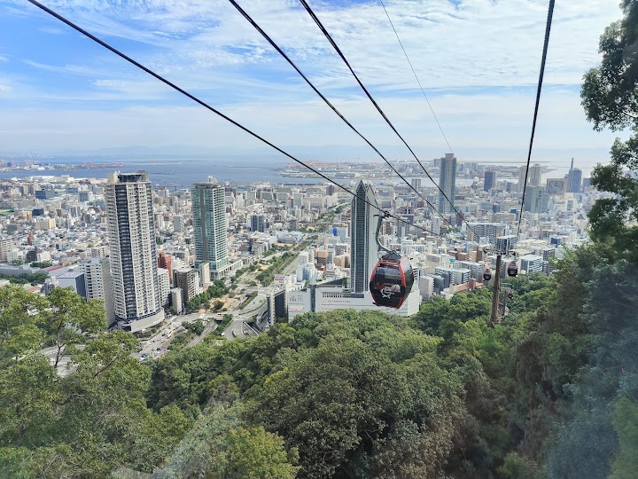
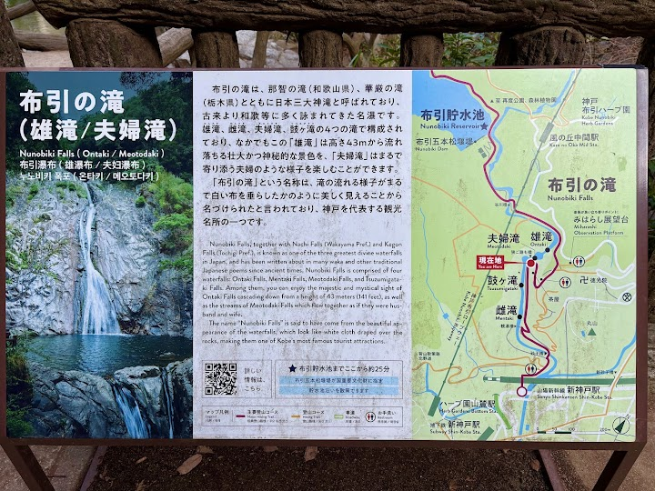
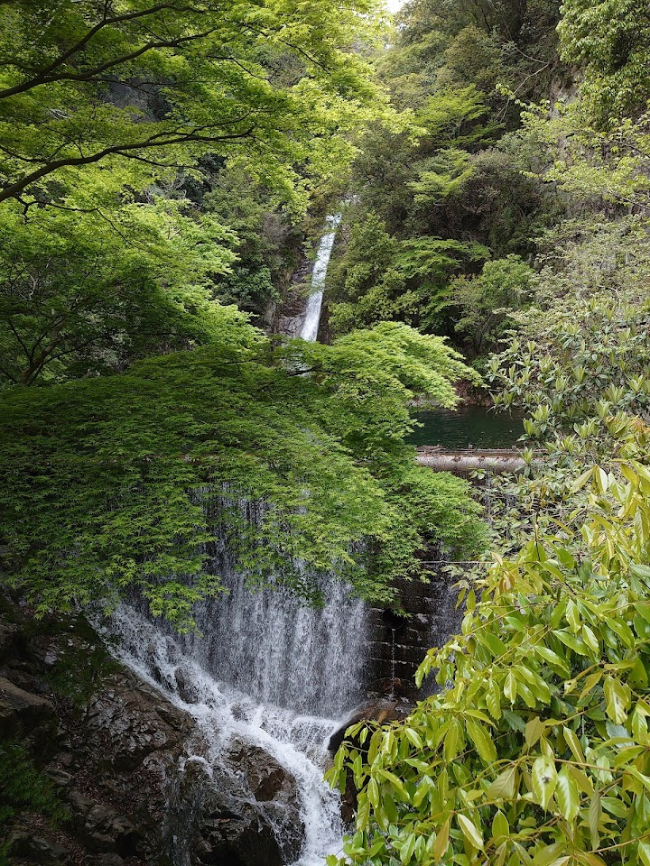
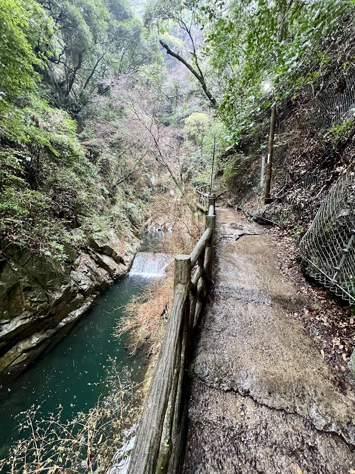
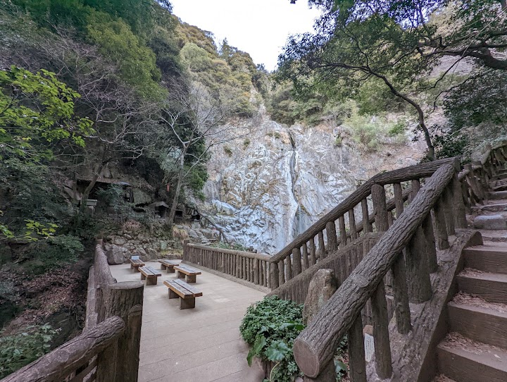

Nunobiki Falls - Ontaki
Ontaki is one of the Nunobiki waterfalls in the hills behind Kobe, reached on a hiking trail from Shin-Kobe Station with views over the city and harbour from nearby ridges. Follow the signs from the station, and allow time for the walk.
Open in Google Maps (street view, more photos and reviews there)






Visitor tips on finding it and getting there
Guide to Hikers heading to Nunobiki Falls Try to look for this sign at Shin-Kobe Station You will need to take the escalators down a level After that, make a u turn and exit the station From there, turn left, u will walk past the underpass of Shin-Kobe station From there onwards, u will be good as the way finding is clear until the destination. Good luck and enjoy the trail along the way! The view of Nunobiki falls was breathtaking.
Nunobiki Falls is a stunning natural escape just a short distance from the city, offering a peaceful retreat with beautiful scenery along the hiking trail. The sound of cascading water and the lush greenery create a refreshing atmosphere, especially during spring and autumn. The walk up is moderately easy and well worth the effort, with scenic viewpoints along the way. It’s a perfect spot for nature lovers, photographers, or anyone looking to unwind away from the urban bustle of Kobe.
A pleasant 15 minute hike from Shin Kobe station. Start from 1F of the station, walk through a tunnel of sorts to the starting point. The way is clearly signposted. If not sure, you can always ask the Information counter staff on 2F. They will give you a map (see photo) and instructions on how to go. You can opt to go farther than ontaki towards Nunobiki dam if you have time